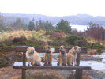

This site was allegedly about the life and activities of the Ellwood family of Cromarty.
A large part of this was Steve's desire to update his 10 year old knowledge of how websites work. He'd not done anything significant since ooh, about 1995. Since he was editor of the local website, he thought it might be sensible to understand how HTMl worked nowadays. Much to his horror, he found things called style sheets and XHTML. He was very pleased that the entire site was handcoded using PFE, but admits he used Nvu for some grunt work. He does need to work out how to use Nvu better for coding XHTML, though the full release helps. This site is valid - see the box at the bottom
We've now been here for over 6 years but still like it a great deal.
We'll provide pictures of the area and the things that interest us. There will be links to Holiday information, both about where we've been , and where we recommend.
At the moment, the only links are to the work in progress of the 1999 New Zealand holiday, the 2000 Singapore and Spanish holidays, though the Spanish one is brief... and the 2001 Hebridean holiday. We did go on another holiday to the Hebrides in 200y, and Boston & Iceland in 2008 but that was about it.
We travel round with six dogs, see below. For most places that makes you very unwelcome.
In Cromarty, you get a friendly welcome and real ale at the Cromarty Arms, but that's cheating a bit, as we live in Cromarty...
On the West side of Scotland, in Gairloch, you get nice rooms, good food and real ale at the Old Inn. Very busy in the summer, but well worth a visit at anytime. We used to be welcome there a couple of times a year, but with 6 dogs, they no longer want us :-(
On Skye, a really nice welcoming hotel is the Uig Hotel - and even their own duck eggs for breakfast, if you're lucky.
We moved to Cromarty from Manchester in England in July 2003. We're both Homeworkers, Steve as an IT Consultant and Estelle running the Virtual Learning Centre on the Black Isle.
Steve is a member of the local Coastguard Search and Rescue Team
He also quite likes outdoorsy stuff, although Estelle suspects this is because he likes all the kit. You can see a description of his first night in a hammock.
We have 6 dogs.
Three of them are pictured below in sun and snow
Below, is a picture of four of them
They are Border Terriers & Border/Lakeland Cross, and there are loads of pictures of them, too.
Often referred to as Mummy & her boys
 |
|